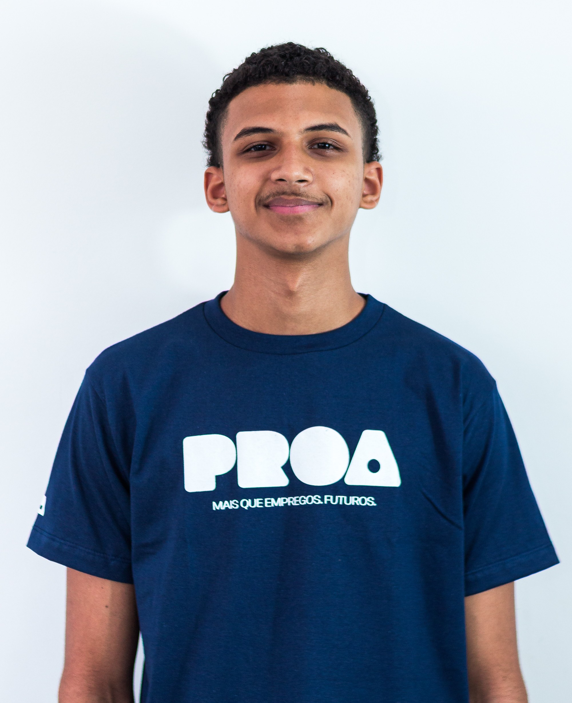

Prazer em Conhecer
Construo minha carreira em tecnologia desde o ensino médio. Concluí o Ensino Médio Técnico em Desenvolvimento de Sistemas (2025), o curso profissionalizante de front-end pela EBAC e a formação full stack do Instituto PROA/Senac como Aluno Destaque da turma. Hoje aprofundo o back-end.
De junho de 2025 a junho de 2026 atuei como desenvolvedor estagiário na Multitools, uma indústria de injeção plástica automotiva. Trabalhei em formato flexível e híbrido, por entregas, e — ao lado de outro estagiário — fui responsável por todo o desenvolvimento de sistemas da empresa: do site institucional a ferramentas internas de qualidade e automação.
Minha experiência reúne front-end (React, TypeScript) e back-end (Node.js, Express, PostgreSQL), e meu foco de crescimento é aprofundar o back-end com C#/.NET — sempre com o objetivo de resolver problemas reais. Atualmente curso a graduação em Análise e Desenvolvimento de Sistemas no Senac Santo Amaro.
Baixar meu currículo (PDF)Mapa de Carreira
Desenvolvedor Júnior Foco atual
Consolidar os fundamentos, conquistar a primeira vaga formal de desenvolvedor e iniciar a graduação. Aprofundar o back-end em C#/.NET, aplicando na prática o que construo na Multitools.
Soft skills para desenvolver:
- Comunicação: traduzir necessidades em requisitos técnicos.
- Autonomia e organização: manter a entrega no modelo remoto/por demanda.
- Proatividade: sugerir melhorias e automatizar tarefas manuais.
Roadmap de aprendizado:
- C# / .NET
- SQL e Banco de Dados
- APIs REST
- Git / GitHub
- Docker (base)
Desenvolvedor Pleno Próximo passo
Ser dono de funcionalidades de ponta a ponta, crescer em uma empresa maior e concluir a graduação, ganhando independência no design de soluções.
Soft skills para desenvolver:
- Pensamento sistêmico: entender como o código afeta o negócio.
- Mentoria: apoiar desenvolvedores mais novos (code review).
- Inglês: evoluir do intermediário ao avançado.
Roadmap de aprendizado:
- Design Patterns (SOLID)
- Testes automatizados
- CI/CD
- Docker na prática
- Cloud (Azure / AWS)
Sênior → Liderança Longo prazo
Tornar-me referência técnica e iniciar a trilha de liderança (Tech Lead → Gestão), mirando cargos altos de tecnologia, inclusive em multinacionais.
Soft skills para desenvolver:
- Liderança técnica: guiar o time nas melhores práticas.
- Negociação: alinhar prazos e recursos com stakeholders.
- Inglês fluente e visão estratégica.
Roadmap de aprendizado:
- Arquitetura de sistemas
- Microsserviços
- Cloud avançada
- Segurança da informação
- Pós / MBA em gestão de TI
Habilidades
Últimos trabalhos com
- HTML
- CSS
- JavaScript
- TypeScript
- React
- Next.js
- Node.js
- Express
- PostgreSQL
- APIs REST
- Python
- Git / GitHub
Aprofundando · próximos passos
- C#
- .NET
- Docker
- Cloud (Azure / AWS)
Soft skills
- Comunicação
- Trabalho em time
- Proatividade
- Resolução de problemas
- Inteligência emocional
- Autonomia
Idiomas
- Português (Nativo)
- Inglês (Em desenvolvimento)